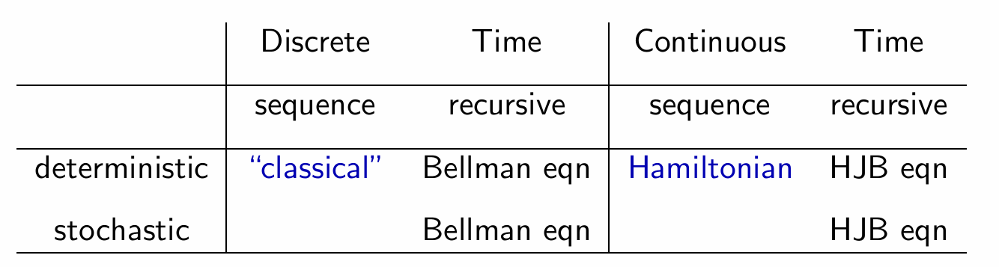

Moll(2014) 一图流概况了宏观经济学中的动态优化方法。总结来说，离散时间下的 sequencial method: Lagrangian(classical) 最为直接和直观，即他是直接从全局考虑哪一个 sequence \{x_t\}_{t=0}^\infty 能达到最优的目标，但是最优的 sequence \{x_t^*\}_{t=0}^\infty 本身并不是完全没有规律的，事实上它在宏观经济中的典型优化问题中总能被一组递归的函数关系描述，因此求解整个 sequence 就等价于去求解那个递归函数关系，然后给定初始值 x_0，我们就可以通过那个递归关系还原出整个序列。当然最优的 sequence 存在的递归结构继承自原始的那个优化问题本身的递归结构，这便是所谓 recursive way 的含义。直观来看，我们是将制定一个全局的最优行动计划（sequence）转变为制定一个在每个状态下对应的最优行动指南（policy function）。
离散时间的形式更为符合直觉，连续时间具有更好的数学性质但理解起来也更为抽象。因此接下来我们会先从离散时间情形出发，再逐步过渡到连续时间情形，以更好看到比较抽象的 Hamiltonian 和 HJB equation 是如何与经典的 Lagrangian 和 Bellman equation 对应的。
具体而言，我们通过宏观经济学中遇到的典型最优控制问题来说明上面表格中各种概念之间的联系。由于我们的目标是建立直观的联系，所以接下来的推导基本是 heuristic 的，很多技术细节被隐去，同时我们只考虑平稳的（时间 t 不作为状态变量）、确定性的优化问题。最后为了符号上的展示方便，我们只考虑单变量情形（一个状态变量，一个控制变量），推广到多变量情形是自然的，基本只需要把偏导替换为梯度，乘积替换为内积。
1 Lagrangian(classical)
几乎所有离散时间下的平稳的确定性最优控制问题都可以写为下述的形式：
\begin{align*} &\max_{ \{x_{t+1}, y_{t}\}_{t=0}^{\infty} } \sum_{t=0}^{\infty} \beta^t u(x_t, y_t) \\[1ex] \text{s.t.} \quad &\ x_{t+1} = g(x_t, y_t)\enspace \forall t \ge 0 \\ &\ x_{t} \in X, \enspace y_t \in Y \enspace \forall t \ge 0\\ &\ x_0 \ \text{is given} \end{align*} \tag{1}
求解这样一个最优化问题最直接的也就是要找到序列 \{x_{t+1}, y_{t}\}_{t=0}^{\infty} 使得目标函数 \sum_{t=0}^{\infty} \beta^t u(x_t, y_t) 最大，当然由于状态变量和控制变量通过 x_{t+1} = g(x_t,y_t) 联系在一起，找到了最优控制变量序列 \{y_{t}\}_{t=0}^{\infty} 也就找到了最优状态变量序列 \{x_{t+1}\}_{t=0}^{\infty}，这也就是所谓最优控制的含义。
在一系列正则条件的保证下，我们仍可以形式化地像有限期的最优化问题那样构建 Lagrangian：
\mathcal{L} = \sum_{t=0}^{\infty} \beta^t u(x_t, y_t) + \sum_{t=0}^{\infty} \lambda_t(g(x_t,y_t)-x_{t+1}) \tag{2}
求一阶条件1：
x_{t+1}: \quad -\lambda_t + \beta^{t+1}u_x(x_{t+1},y_{t+1}) + \lambda_{t+1}g_x(x_{t+1},y_{t+1}) = 0 \tag{3}
y_{t}: \quad \beta^{t}u_y(x_{t},y_{t}) + \lambda_{t}g_y(x_{t},y_{t}) = 0 \tag{4}
消去 \lambda 整理得到 Euler equation：
u_y(x_t, y_t) = \beta \left[ u_x(x_{t+1}, y_{t+1}) - \frac{u_y(x_{t+1}, y_{t+1})}{g_y(x_{t+1}, y_{t+1})} g_x(x_{t+1}, y_{t+1}) \right](-g_y(x_t, y_t)) \tag{5}
但仅有 Euler equation 不足以描述最优解，事实上我们还需要最后的一个额外条件：transversality conditon(TVC)：
\lim_{T \to \infty} \lambda_T x_{T+1} = 0 \tag{6}
但是为何还需要这样一个有些奇怪的 TVC ？一个不严格但 heuristic 的想法是考虑上述问题先是有限的 T 期问题，且增加一个终点约束 x_{T+1} \ge 0，complementary slackness 要求在终点时有 \lambda_T x_{T+1} = 0，令 T \to \infty 即得 (6)。
总结例1，我们发现 classical 方法最终得到的对解的描述是一个差分方程组：
\begin{align*} u'(c_t) &= \beta(f'(k_{t+1}) + (1 - \delta))u'(c_{t+1}) \\ k_{t+1} &= f(k_t) + (1 - \delta)k_t - c_t \\[1ex] \text{with} \enspace k_0 \enspace &\text{given}, \enspace \lim_{T \to \infty} \beta^T u'(c_T) k_{T+1} = 0 \end{align*} \tag{7}
即两变量的一阶差分方程组带有两个边界条件（一个初始条件和一个TVC）。事实上如果我们将控制变量用状态变量表示（c_t= f(k_t) + (1 - \delta)k_t - k_{t+1}），我们得到：
\begin{align*} u'(f(k_t) + (1 - \delta)k_t - k_{t+1}) &= \beta(f'(k_{t+1}) + (1 - \delta))u'(f(k_{t+1}) + (1 - \delta)k_{t+1} - k_{t+2}) \\[1ex] \text{with} \enspace k_0 \enspace \text{given}, \enspace &\lim_{T \to \infty} \beta^T u'(f(k_T) + (1 - \delta)k_T - k_{T+1}) k_{T+1} = 0 \end{align*} \tag{8}
这是一个仅关于 k 的二阶差分方程组，因此仍然需要两个边界条件。
可以发现无论是哪种表示方式，我们最终得到的都是关于最优序列的一组等价描述，但即使上面这个很简单的例子要得到最终的解仍然没有那么容易，因为其中一个边界条件 TVC 在无穷远处，直接考虑这个 sequence 的问题似乎只能通过猜测控制变量的初始值，然后逐个验证是否会违反 TVC。
接下来考虑的 recursive method，则带来了完全不一样的视角。
2 Bellman equation
Recursive method，更常见的名字是 dynamic programming，其 key idea 其实非常简单，下面先通过一个三期的例子来说明这一点：
\begin{align*} V_0(x_0) = &\max_{\{x_{t+1}, y_{t}\}_{t=0}^{2}} u(x_0, y_0) + \beta u(x_1, y_1) + \beta^2 u(x_2, y_2) \\[1ex] \text{s.t.} \quad &\ x_{t+1} = g(x_t, y_t)\enspace \text{for} \enspace t = 0,1,2 \\ &\ x_0 \ \text{is given} \end{align*} \tag{9}
这里我们定义了值函数 V_0(x_0)，即给定状态变量初始值 x_0 优化问题所能取得的最大值。接下来我们正式递归地考虑这一优化问题：
\begin{align*} V_0(x_0) & = \max_{\substack{ \{x_{t+1}, y_{t}\}_{t=0}^{2} \text{ s.t.} \\ x_{t+1} = g(x_t, y_t) \ \text{for} \ t = 0,1,2 \\ x_0 \text{ given} }} u(x_0, y_0) + \beta u(x_1, y_1) + \beta^2 u(x_2, y_2) \\ & = \max_{\substack{ \{x_{1}, y_{0}\} \text{ s.t.} \\ x_{1} = g(x_0, y_0) \\ x_0 \text{ given} }} u(x_0, y_0) + \beta \left\{ \max_{\substack{ \{x_{t+1}, y_{t}\}_{t=1}^{2} \text{ s.t.} \\ x_{t+1} = g(x_t, y_t) \ \text{for} \ t = 1,2 \\ x_1 \text{ given} }} u(x_1, y_1) + \beta u(x_2, y_2) \right\} \\ & = \max_{\substack{ \{x_{1}, y_{0}\} \text{ s.t.} \\ x_{1} = g(x_0, y_0) \\ x_0 \text{ given} }} u(x_0, y_0) + \beta \left\{ \max_{\substack{ \{x_{2}, y_{1}\} \text{ s.t.} \\ x_{2} = g(x_1, y_1) \\ x_1 \text{ given} }} u(x_1, y_1) + \beta \left\{ \max_{\substack{ \{x_{3}, y_{2}\} \text{ s.t.} \\ x_{3} = g(x_2, y_2) \\ x_2 \text{ given} }} u(x_2, y_2) \right\} \right\} \\ & = \max_{\substack{ \{x_{1}, y_{0}\} \text{ s.t.} \\ x_{1} = g(x_0, y_0) \\ x_0 \text{ given} }} u(x_0, y_0) + \beta \left\{ \max_{\substack{ \{x_{2}, y_{1}\} \text{ s.t.} \\ x_{2} = g(x_1, y_1) \\ x_1 \text{ given} }} u(x_1, y_1) + \beta V_2(x_2) \right\} \\ & = \max_{\substack{ \{x_{1}, y_{0}\} \text{ s.t.} \\ x_{1} = g(x_0, y_0) \\ x_0 \text{ given} }} u(x_0, y_0) + \beta V_1(x_1) \end{align*} \tag{10}
上面的推导过程完整地展示了我们如何将一个全局的最优化问题递归地嵌套为一个个更小的优化子问题，并如何从最后一期开始倒向地逐步求解整个优化问题。对应每一阶段的优化子问题，我们都会得到一个最优行动指南：y_t = h_t(x_t)，称为 policy function，它指示了我们如何根据当前的时间 t 以及状态 x_t 展开最优行动，因此与 sequence 方法直接得到的是一组序列不同，recursive 的方法得到的是一组函数，根据这组函数，我们再从第 0 期出发，就可以还原出最优的序列。
最后值得额外说明的是，鉴于时间的特殊地位，我们依照惯例将时间 t 记作下标，但 V_t(x_t) 和 h_t(x_t) 实际上是 V(t,x_t) 和 h(t,x_t)，即时间 t 在这里实际是一个状态变量，即该优化问题是非平稳的。接下来我们将看到推广到无限期会将我们的问题变为平稳的，这也是为什么我们会偏爱一个看起来更难处理的无限期的技术原因。
我们将典型的离散时间最优控制问题重写在下面：
\begin{align*} V(x_0) = &\max_{ \{x_{t+1}, y_{t}\}_{t=0}^{\infty} } \sum_{t=0}^{\infty} \beta^t u(x_t, y_t) \\[1ex] \text{s.t.} \quad &\ x_{t+1} = g(x_t, y_t)\enspace \forall t \ge 0 \\ &\ x_{t} \in X, \enspace y_t \in Y \enspace \forall t \ge 0\\ &\ x_0 \ \text{is given} \end{align*} \tag{11}
在一系列正则条件的保证下，我们可以形式化地像有限期那样将上式写为：
\begin{align*} V(x_0) & = \max_{\substack{ \{x_{t+1}, y_{t}\}_{t=0}^{\infty} \text{ s.t.} \\ x_{t+1} = g(x_t, y_t) \ \forall t \ge 0 \\ x_0 \text{ given} }} \sum_{t=0}^{\infty} \beta^t u(x_t, y_t) \\ & = \max_{\substack{ \{x_{1}, y_{0}\} \text{ s.t.} \\ x_{1} = g(x_0, y_0) \\ x_0 \text{ given} }} u(x_0, y_0) + \beta \left\{ \max_{\substack{ \{x_{t+1}, y_{t}\}_{t=1}^{\infty} \text{ s.t.} \\ x_{t+1} = g(x_t, y_t) \ \forall t \ge 1 \\ x_1 \text{ given} }} \sum_{t=1}^{\infty} \beta^{t-1} u(x_t, y_t) \right\} \\ & = \max_{\substack{ \{x_{1}, y_{0}\} \text{ s.t.} \\ x_{1} = g(x_0, y_0) \\ x_0 \text{ given} }} u(x_0, y_0) + \beta \underbrace{\left\{\max_{\substack{ \{x_{t+2}, y_{t+1}\}_{t=0}^{\infty} \text{ s.t.} \\ x_{t+2} = g(x_{t+1}, y_{t+1}) \ \forall t \ge 0 \\ x_1 \text{ given} }} \sum_{t=0}^{\infty} \beta^t u(x_{t+1}, y_{t+1}) \right\}}_{V(x_1)} \end{align*} \tag{12}
注意到此时正是由于我们的问题是无限期的，括号内的优化问题与原始问题因此完全相同（没有下标 t），唯一的区别只在于初始状态 x 不同，于是我们得到了最终的 Bellman equation：
\begin{align*} V(x_0) = &\max_{ \{x_{1}, y_{0}\} } u(x_0, y_0) + \beta V(x_1) \\[1ex] \text{s.t.} \quad &\ x_{1} = g(x_0, y_0) \\ &\ x_{1} \in X, \enspace y_0 \in Y \\ &\ x_0 \ \text{is given} \end{align*} \tag{13}
问题的平稳性进一步体现在：我们从任何一个时间点 t 开始进行上述分析，我们都会得到和上面相同的结构：
\begin{align*} V(x_t) = &\max_{ \{x_{t+1}, y_{t}\} } u(x_t, y_t) + \beta V(x_{t+1}) \\[1ex] \text{s.t.} \quad &\ x_{t+1} = g(x_t, y_t) \\ &\ x_{t+1} \in X, \enspace y_t \in Y \\ &\ x_t \ \text{is given} \end{align*} \tag{14}
…
3 Hamiltonian
discrete time hamiltonian
interior variational argument
4 HJB equation
heuristic derived from bellman equation
directly derived
Footnotes
这里我们还隐含假设了最优解是内点解，经济学模型通常都会通过施加 Innada condition 来避免边角解的麻烦，否则我们需要将一阶条件写成 complementary slackness 的形式。↩︎